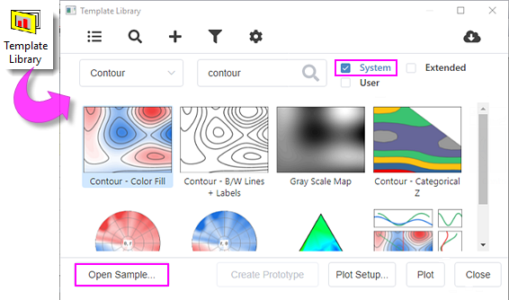

FAQ-1179 Wie erfahre ich, welche Datenanforderungen Origins Standarddiagrammvorlagen haben?
Build-In-Graph-Template-Data-Requirement
Letztes Update: 12.06.2023
Abgesehen von der Dokumentseite des Diagrammtyps, die Sie einsehen könne, besteht eine intuitivere Möglichkeit darin, das Beispielprojekt in der Vorlagenbibliothek aufzurufen. Sie stellt Beispielprojekte für alle Standarddiagrammvorlagen bereit.
- # Wählen Sie im Menü Zeichnen: mit Template.
- In der Vorlagenbibliothek:
- Wählen Sie Kategorie und/oder geben Sie das Stichwort zum Suchen der gewünschten Diagrammvorlage ein.
- Aktivieren Sie das Kontrollkästchen System und deaktivieren Sie die anderen beiden.
- Klicken Sie auf das gewünschte Beispieldiagramm und klicken Sie auf die Schaltfläche Beispiel öffnen ..., um das Beispielprojekt zu öffnen.
- 
- Überprüfen Sie in dem geöffneten Beispielprojekt die Quellarbeitsmappe/-matrixmappe auf die Datenstruktur dieses Diagrammtyps.
Hinweis: Wenn ein Diagrammtyp auf Grundlage mehrerer Datenanordnungen gezeichnet werden kann, listet das Beispielprojekt alle Anordnungen in verschiedenen Unterordnern an. Die Kontur kann zum Beispiel aus XYZ-Arbeitsblattdaten, einer Matrix und einer virtuellen Matrix erstellt werden. Das Beispielprojekt zeigt sie jeweils in drei Unterordnern.
Schlüsselwörtern:Datenanforderung, Datenstruktur, Datenanordnung, Diagrammvorlage, Diagrammtyp, Datenformat der Eingabe, Datentyp der Quelle